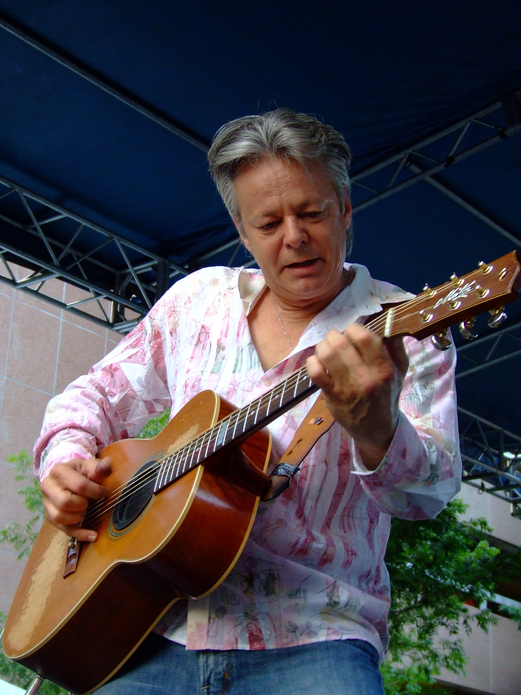

Tommy Emmanuel
Tommy Emmanuel é atualmente um dos mais talentosos violonistas do mundo, nasceu em 31 de maio de 1955 em Muswellbrook, New South Wales, Australia. Sua técnica em usar sua guitarra como percussão assim como tocando em instrumentos de cordas o tornam unico. Ele começou a tocar quando tinha 6 anos e começou a fazer apresentações muito cedo. Ele se apresentou para milhares de pessoas durante as olimpiadas de Sydney em 2000.
Abaixo alguns Videos de Tommy Emmanuel.